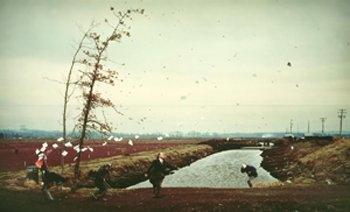

A Sudden Gust of Wind (after Hokusai)
Jeff Wall · 1993 · Colour transparency in light box · 250 × 397 cm · Tate Modern, London
In copyright. Look and learn: shown for study, not for download.
Jeff Wall spent five months on this picture, which reworks a Hokusai woodcut of about 1832, Yejiri Station, Province of Suruga. He shot it with five actors in a landscape near Vancouver, waiting for the right weather, and then modified and collaged the elements digitally. It is shown in a light box 2.5 metres high and nearly four metres wide.